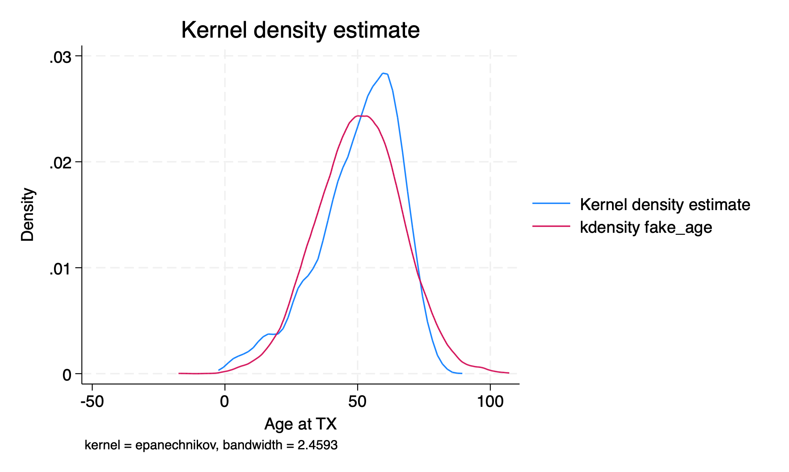
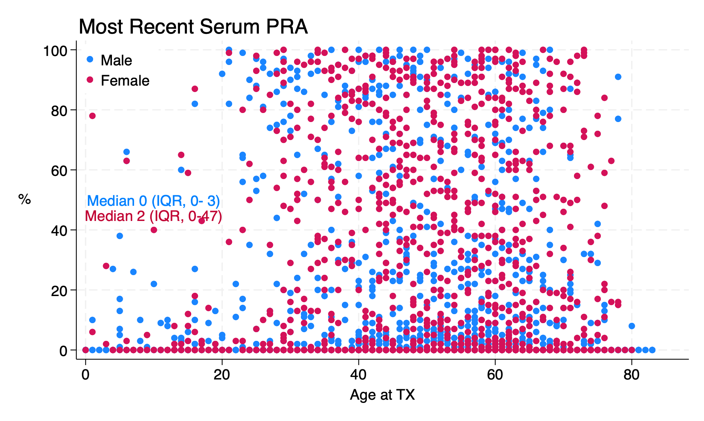
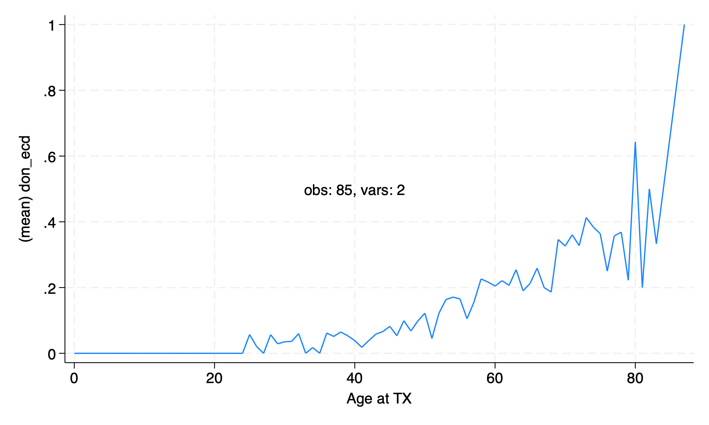
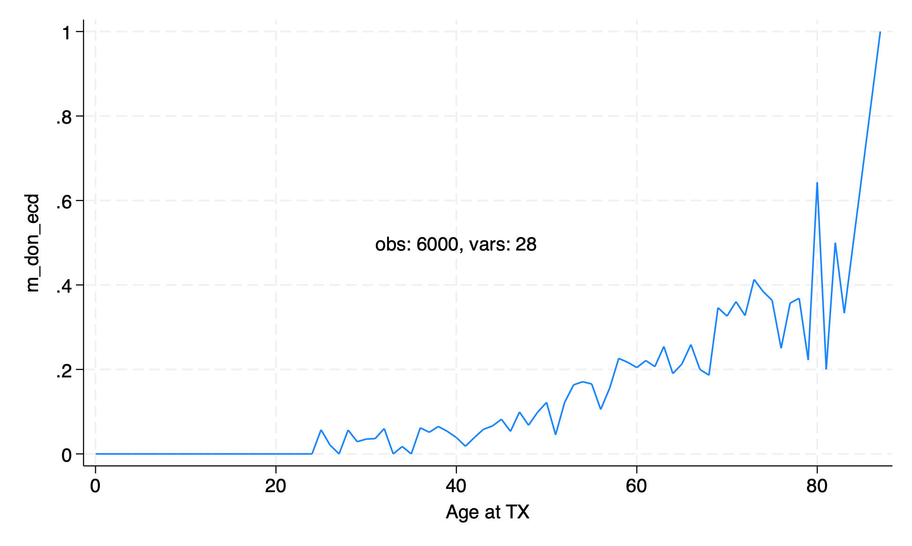
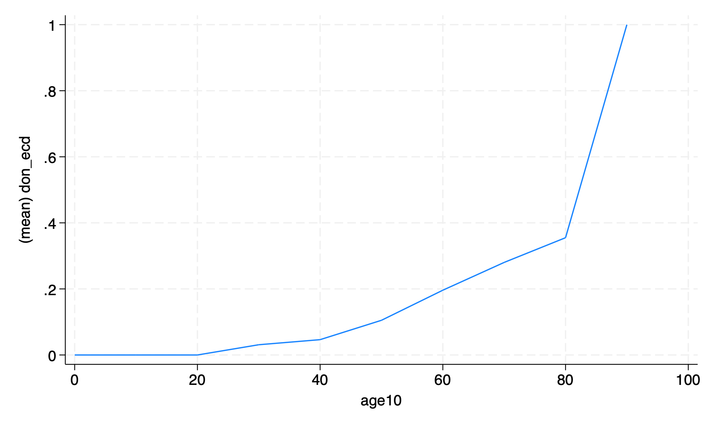

lab6 (including solutions)#
lab5: solutions
data: transplants.dta donors_recipients.dta donors.dta
stata18: updated color palatte
This lab is optional; you are NOT required to complete these questions. Please use this lab as an opportunity to review the course material and prepare yourself for the homework questions. Sample responses to the lab questions will be provided separately.
Start Stata, open your do-file editor, write the header, and load
transplants.dta.
use transplants, clear
Get a 10% random sample of the dataset. Specifically, follow these steps. (1) Set a seed number. (2) Generate a variable that includes a random number between 0 and 1 following a uniform distribution (example included in first-ever .do file script you saw in this class from chapter:
tokenize. (3) Sort by the random variable. (4) Keep the first 10% observations and drop the rest. (5) Drop the random variable.count set seed 2021 gen rdm=runiform() sort rdm keep if _n<=_N/10 drop rdm count //alternative use transplants, clear count sample 10 count
Clear and reload
transplants.dta.
use transplants, clear
Generate a variable called
fake_agewhich is a normally distributed random variable with mean and standard deviation equal to the mean and standard deviation of the actual age variable.sum age gen fake_age=rnormal(r(mean), r(sd)) sum age fake_age compare age fake_age kdensity age, addplot(kdensity fake_age) list fake_id age fake_age in 1/10 graph export kdensity.png, replace

Make a scatter plot of peak PRA by age in transplant recipients. Does it look like there’s a relationship between peak PRA and age, and if so, what is the relationship?
use transplants, clear
graph twoway scatter peak_pra age //full syntax
tw sc peak_pra age //abbreviated syntax
//explore other twoway options!!
#delimit ;
forval f=0/1 { ;
sum peak_pra, d ;
local m_iqr_`f': di
"Median" %2.0f r(p50)
" (IQR," %2.0f r(p25)
"-" %2.0f r(p75)
")"
;
} ;
tw (sc peak_pra age if gender==0)
(sc peak_pra age if gender==1,
legend(
on
ring(0)
pos(11)
lab(1 "Male")
lab(2 "Female")
)
ti("Most Recent Serum PRA",pos(11))
yti("%", orientation(horizontal))
text(50 10 "`m_iqr_0'",col(midblue))
text(45 10 "`m_iqr_1'",col(cranberry))
)
;
#delimit cr
graph export lab6q5.png, replace

The graph of proportion of ECD transplants by age from the lecture was a little messy. Remake the graph with the age rounded to the nearest ten years.
From the chapter:
twowayuse transplants, clear collapse (mean) don_ecd, by(age) graph twoway line don_ecd age, text(.5 40 "obs: `c(N)', vars: `c(k)'") graph export collpasebyage.png,replace count //alternative, without messing up the data use transplants, clear egen m_don_ecd=mean(don_ecd), by(age) egen agetag=tag(age) #delimit ; line m_don_ecd age if agetag, text( .5 40 "obs: `c(N)', vars: `c(k)'") sort ; #delimi cr count graph export lab6q6.png,replace
 
After rounding

use transplants, clear gen age10 = round(age, 10) //one way to restore data after messing it up preserve collapse (mean) don_ecd, by(age10) graph twoway line don_ecd age10 graph export collpasebyage10.png,replace restore count
You have all your commands in your do file, right? Run your do file from the beginning and make sure your do file does exactly the same thing. Also, in the spirit of
hw1, and the spirit of the last 7 weeks, your .do file should look like this if you’ve adhered to the guidelines:
//collapse [-] at qui
qui {
//collapse [-] at if X {
qui {
if 0 { //lab6 dofile
if 1 { //transplants.dta
if 2 { //runiform(),two methods
if 3 { //transplants reload
if 4 { //r(normal),kdensity
if 5 { //embed macro in text then graph
if 6 { //collpase & egen equivalence!!!!!!
if 7 { //aesthetical .do file structure :)
}